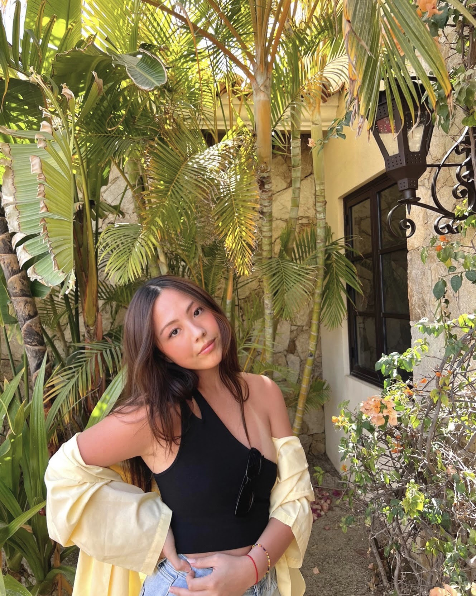

Thanks for visiting my portfolio website! I am studying computer science at Boston University, and I am hoping to concentrate in Artificial Intelligence. My interests include software engineering and machine learning, and I love to sail, lift, and play with my cats, Bailey and Michaeljackson in my free time. Feel free to reach out anytime, and a copy of my most recently updated resume can be found here.